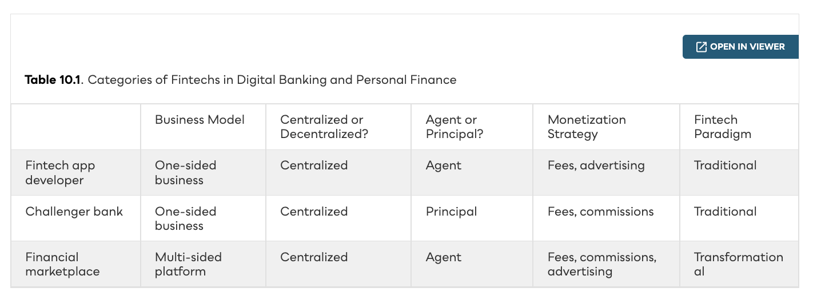
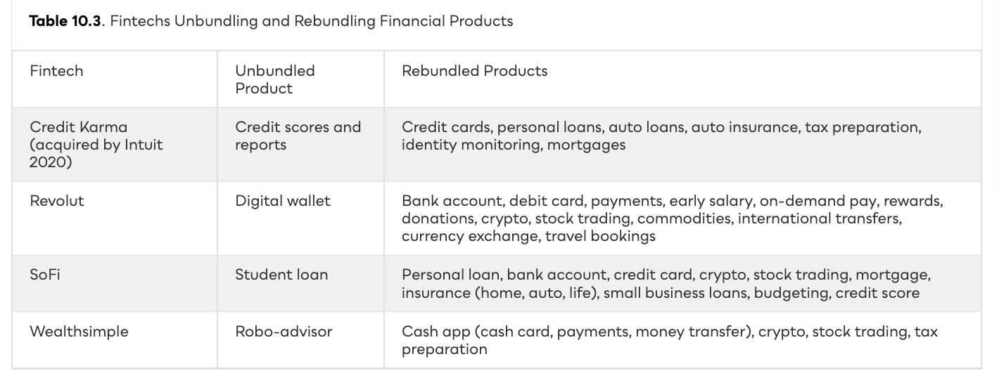
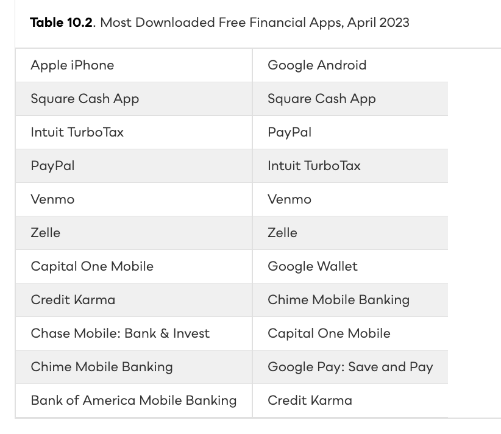
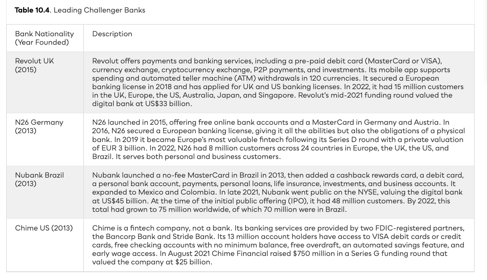
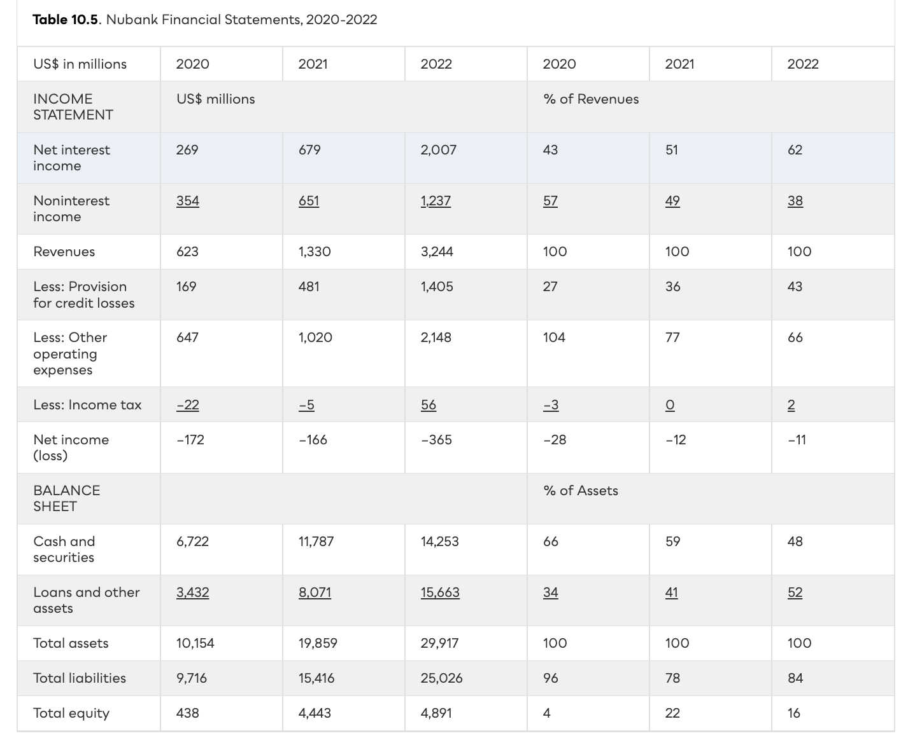
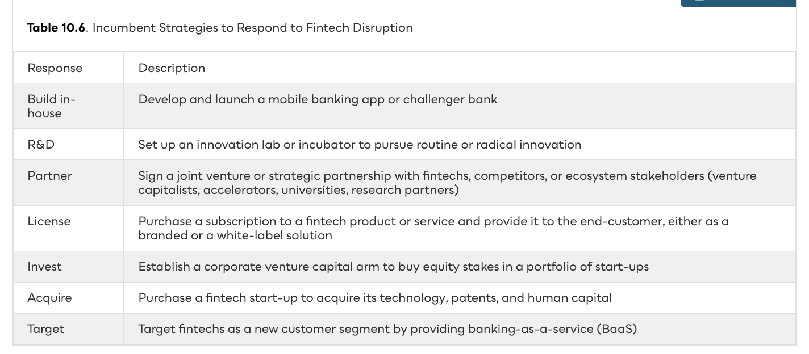

Digital Banking & Personal Finance
App developers, challenger banks, and financial marketplaces are unbundling and rebundling the bank — delivering an experience that is easier, cheaper, faster, and more convenient.
Following the disruption playbook.
Lower barriers to entry and high profit margins have drawn fintechs into day-to-day banking — from tiny start-ups to digital-only banks to bigtech with billions of customers. Some want to replace incumbents; others want to partner and sell to their customers. Table 10.1 previews three distinct models.

A giant market of dissatisfied customers.
Banks are seen as monolithic gatekeepers earning high profits by overcharging. Minority and lower-income groups struggle to access credit — or are shut out entirely — even in the wealthiest economies.
2008–09 lowered both barriers.
The crisis also unleashed a wave of innovation. Disgruntled insiders left to launch fintech start-ups — they knew exactly where the industry profit pools were located and set about draining them while incumbents were weak and customers were willing to switch.
From screen scraping to APIs.
The data belongs to the customer, yet banks guard it. The traditional workaround — screen scraping — forces consumers to hand over their login and password, violating user agreements and creating real security risk. More than 4 million Canadians have done it anyway.
Unbundle, then rebundle.
Unbundling means picking one profitable bank product and offering a better, cheaper version — avoiding the loss-leaders (like savings accounts) that drag bank margins. Once a foothold is established with early adopters, rebundling adds complementary products to make customers sticky and pull rivals’ customers over.

Banks become the perfect customer.
Many fintechs found a consumer business too costly to scale, and older customers still trust incumbents. Banks have huge customer bases, deep pockets, and regulatory expertise but are slow and weighed down by legacy IT — so fintechs license their apps via a software-as-a-service (SaaS) model, often white-labeled under the bank’s brand.
Open an account in under 10 minutes.
The end-to-end digital experience sets a challenger bank apart: no branch, no paper, no face-to-face meeting (just KYC ID upload). Open 24/7/365, with intuitive dashboards, spending stats, embedded fintech tools, education, and chatbots that escalate to live help.

Billions raised, banking licenses contested.

A 30× LTV/CAC engine — still unprofitable.


A full-service bank without the capital.
A financial marketplace connects customers to third-party products — banking, payments, crypto, investments, insurance — charging the seller a fee or commission, plus advertising. The goal: build an ecosystem with network effects, no banking license required.
A menu of seven responses.
The right strategy depends on capabilities and scale. Giants like JPMorgan build, invest, and acquire; the 5,000+ smaller US deposit-takers lack the scale and instead license and partner. The biggest still hold competitive moats — regulation, customer bases, funding, and budgets to outspend fintechs.

Better experience — harder economics.
Fintechs attacked banking’s pain points, enabled by post-crisis distrust and open banking. App developers unbundle one product, then rebundle — many pivoting from costly B2C to B2B SaaS. Challenger banks rebundle a full bank digitally; financial marketplaces use APIs to sell third-party products and earn network effects. Yet customer acquisition is brutal and profits elusive — Nubank reached 70M customers while still losing money annually. Incumbents answer with a menu: build, R&D, partner, license, invest, acquire, or target fintechs as customers.